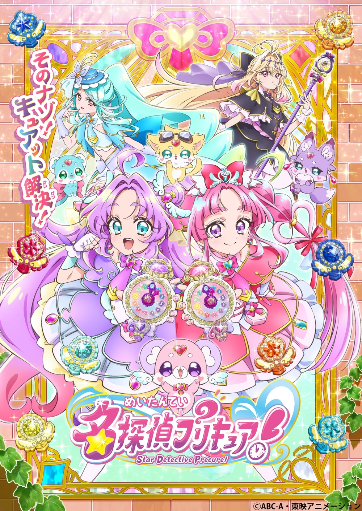

Tình trạng: Đang tiến hành
Bản dịch: Team Subtitle - MHEnt
Mô tả:
Akechi Anna là một nữ sinh 14 tuổi, học lớp 2 trung học cơ sở tại thị trấn Makoto Mirai!
Được dẫn dắt bởi nàng tiên Pochitan xuất hiện vào ngày sinh nhật của cô và một mặt dây chuyền trong phòng, cô du hành xuyên thời gian từ năm 2027 đến thành phố Makoto Mirai năm 1999...!
Ở đó, cô gặp Kobayashi Mikuru, một cô gái 14 tuổi mơ ước trở thành thám tử!
Giữa tất cả những điều đó, một sự cố xảy ra!? Có vẻ như ai đó đang gặp rắc rối sau khi bị mất trộm một thứ quý giá...! Liệu đây có phải là việc làm của nhóm Siêu trộm Bóng ma...!? Chúng ta không thể làm ngơ trước người đang gặp khó khăn...! Được thúc đẩy bởi cảm giác đó, Anna và Mikuru biến hình thành Star Detective Pretty Cure!!
Star Detective Pretty Cure bảo vệ nụ cười của mọi người bằng sức mạnh suy luận của họ!
Giải mã bí ẩn đó!
Và liệu Anna có thể trở về thời gian ban đầu của mình...!?